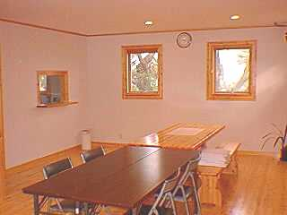
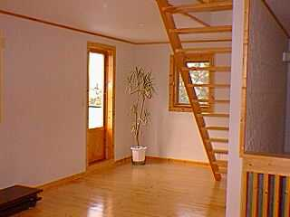
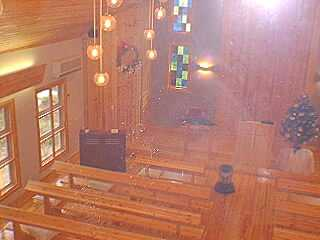

2階のお部屋

階段を上がってすぐ左手はこんなかんじ。下の写真と撮った場所は大体同じです。食事や教会学校に使われています。礼拝中は母子室として使われています。

階段を上がってすぐ右手の写真。写真右に見えている暗い部分が、階段です。正面の梯子は３階にあがる階段です。

写真を撮った方向とは反対側に窓があって礼拝堂を一望できるようになっています。これはその写真です。もちろんスピーカーもあってメッセージなどもここで聞くことができます。
写真の一覧に戻る